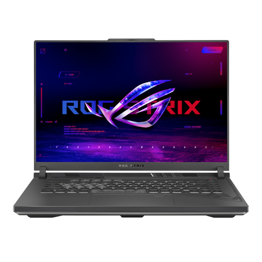

Carleton University - OSS4900 Capstone Project
Multimodal Wildfire Detection Using RGB-Thermal Sensor Fusion
This project compares RGB-only, thermal-only, OR late fusion, Product-of-Experts, and intermediate feature fusion models for wildfire detection. The goal is to make wildfire detection more reliable when smoke, low visibility, or hot clutter make a single sensor unreliable on its own.
Overview
Why combine RGB and thermal sensing?
RGB strengths
RGB imagery captures flame texture, smoke shape, and scene context, but it can be affected by lighting changes, haze, and visually confusing backgrounds.
Thermal strengths
Thermal imagery highlights heat signatures and stays useful when visibility drops, but it can overreact to hot non-fire objects and lose scene detail.
Fusion objective
The capstone asks whether combining both modalities can improve robustness without sacrificing precision, recall, or balanced accuracy.
Evaluation set used on this website
The main comparison shown here uses the packaged FLAME3 eval-only bundle with 109 paired RGB-thermal samples: 85 Fire and 24 No_Fire.
Intermediate fusion training context
The learned mid-fusion model was trained with a larger RGBT split containing 2526 train, 170 validation, and 518 test samples before being evaluated on FLAME3.
Technology
Training hardware, model stack, and implementation resources
The project combines local training hardware, the YOLO11 model family, and a separate public code repository for training and fusion experiments.

Training Hardware
Laptop with RTX 4070 GPU
The project was trained on a laptop with an NVIDIA RTX 4070 GPU. This setup gave us access to 8GB of VRAM and at least 32GB of system RAM for training, evaluation, and multimodal fusion experiments.
YOLO11
YOLO11 was used as the core detection backbone for both the RGB and thermal branches. It provides a practical transfer-learning base for wildfire detection experiments.
How YOLO11 fits this project
1. Start with pretrained YOLO11 detectors.
2. Train RGB and thermal branches independently.
3. Compare single-modality predictions with late fusion and learned fusion.
4. Evaluate all approaches on the same FLAME3-based test set.
Training and Fusion Code
The training and fusion implementation is documented in the public GitHub repository below.
Datasets
Datasets used for RGB, thermal, and evaluation experiments
The project combines public RGB and thermal wildfire data with FLAME3-based evaluation material.
FLAME 3 RGB Imagery
The RGB side of the project draws from the FLAME 3 research dataset, a UAV wildfire management dataset that provides field imagery useful for smoke and flame analysis.
RGB-Thermal Forest Fire Dataset
The thermal branch uses the Roboflow-hosted RGB-Thermal Forest Fire dataset, which supports paired multimodal wildfire training and comparison.
FLAME3-Based Evaluation Set
The final comparison presented on this site uses a FLAME3-based independent test bundle so the RGB, thermal, late-fusion, PoE, and mid-fusion models are judged on the same set.
Pipeline
Project pipeline from sensing to decision
Paired sensor input
Each scene provides a synchronized RGB frame and thermal frame.
Modality-specific models
Separate YOLO-based detectors extract confidence signals from each modality.
Fusion layer
Predictions are merged with OR late fusion, Product-of-Experts, or learned mid-fusion.
Evaluation and thresholding
Accuracy, precision, recall, F1, and balanced accuracy are compared on common test bundles.

Fusion Methods
Three fusion strategies compared in the capstone

Baseline late fusion
OR Late Fusion
A decision is positive when either RGB or thermal evidence crosses its threshold. This tends to preserve recall, but it can inherit false positives from the stronger modality on a given scene.
fire if RGB ≥ trgb OR Thermal ≥ tth

Agreement-based late fusion
Product-of-Experts
PoE rewards agreement between modalities. It improved precision to 100% on the FLAME3 eval-only bundle, but the stricter agreement rule reduced recall compared with OR late fusion and mid-fusion.
Pfused ∝ Prgb × Pthermal

Learned feature fusion
Mid-Fusion
Mid-fusion combines internal feature embeddings from the RGB and thermal models, then learns a fused decision head. On the packaged FLAME3 evaluation, it delivered the best overall accuracy and F1 score of the fusion methods shown here.
concat(featuresrgb, featuresthermal) → fusion head
Results
FLAME3 eval-only comparison
These cards use the packaged evaluation summaries already stored in the project. The common comparison set contains 109 paired samples.
Key result
Mid-fusion produced the strongest overall score on this benchmark with 90.83% accuracy, 91.21% precision, 97.65% recall, and 94.32% F1.
Precision-recall tradeoff
PoE reached 100% precision and 100% specificity, but recall dropped to 85.88%. That makes it attractive when false alarms matter most, but not when missing fire is more costly.
Tuned holdout result
On a larger intermediate-fusion holdout split, threshold retuning improved holdout accuracy from 80.21% to 91.98% while keeping precision at 100%.


Examples
Sample inputs and fused outputs


Team
Contributors and advisor
This capstone project was produced by the student contributors below, under faculty supervision.
Oje Udobi
Capstone project contributor and co-creator.
Ziyan Huang
Capstone project contributor and co-creator.
Ara Esho
Capstone project contributor and presentation collaborator.
Advisor
Marzieh Amini
Faculty advisor for the capstone project.
Project Scope
Multimodal wildfire detection using RGB and thermal imagery, with fair comparison across YOLO11-based single-modality and fusion methods.
References
Datasets, model sources, and literature
"Flame 3 - Radiometric Thermal UAV Imagery for Wildfire Management." IEEE DataPort.
Kularatne, Windula, et al. "Fireman-UAV-RGBT." Zenodo, 9 Sept. 2024.
Liang, Enqiang, et al. "Object Detection Model of Vehicle-Road Cooperative Autonomous Driving Based on Improved Yolo11 Algorithm." Scientific Reports, 2 Sept. 2025.
"Participating in an International Robot Contest as a Way to Develop Professional Skills in Engineering Students." IEEE Xplore.
"Research Dataset Finder." Etsin.
"Top Forest Datasets and Models." Roboflow Universe.
Zhang, Yalin, et al. "A UAV-Based Multi-Scenario RGB-Thermal Dataset and Fusion Model for Enhanced Forest Fire Detection." Remote Sensing, 25 July 2025.
"YOLO11." Ultralytics Documentation.